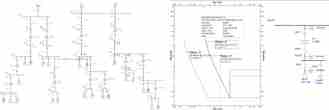

Final Project · Embedded Control · ANN
Automatic Spice Dryer with ANN-based Temperature Control
Designed and built an automatic spice-drying machine controlled by an STM32F446RE microcontroller, using an Artificial Neural Network (ANN) to adaptively regulate a 1000 W finned heater based on the selected material (chili, turmeric, or sweet potato). Heater power is delivered through a TRIAC-based AC-AC voltage controller driven by a TCA785 phase-control IC, while an SHT31-F sensor feeds real-time temperature and humidity data into the trained ANN model to keep the chamber at its target setpoint. A Nextion touchscreen HMI displays live process data, and a buzzer signals completion once humidity reaches the optimal level.
STM32F446REANNTRIAC / TCA785SHT31-FNextion HMI
📷 Documentation
Machine, control panel and test documentation · Click image to open
Power System Analysis · ETAP
Power System Design & Protection Coordination (ETAP)
Coursework Project · Workshop Desain Sistem Tenaga Listrik · 2024. Designed and simulated a 25-bus power system spanning sub-transmission, primary, and secondary distribution networks in ETAP. Performed load flow analysis, three-phase and unbalanced short-circuit studies, and calculated per-unit impedances to size overcurrent relay (OCR) pickup settings and time-dial coordination across four protection typicals, ensuring selective tripping between upstream and downstream breakers.
ETAPLoad FlowShort-CircuitOCR CoordinationPer-Unit
📷 Documentation

ETAP network, protection coordination and relay study · Click image to open
Industrial Automation · SCADA
SCADA-based Energy Monitoring & Motor Speed Control
Coursework Project · Workshop SCADA · 2025. Configured a Schneider PM5300 power meter for real-time energy monitoring and remote lamp control via Modbus RTU holding registers, then implemented closed-loop speed control of an induction motor using an Altivar ATV312 inverter, writing frequency and control-word registers directly through a generic Modbus/Jbus tester to drive forward, reverse, and stop commands.
SCADAModbus RTUPM5300ATV312Induction Motor
📷 Documentation
SCADA, Modbus RTU and motor control documentation · Click image to open
Industrial Automation · PLC / HMI
Forward-reverse Conveyor Automation with SCADA HMI
Coursework Project · Workshop Otomasi Industri dan Instrumentasi · 2025. Designed a PLC ladder-logic program in TIA Portal to control a three-stage bottle conveyor in forward and reverse directions, using TON timers to sequence motor stages and prevent mechanical shock during direction changes, then built a WinCC HMI screen with start, emergency-stop, and directional controls for real-time visualization and operation.
TIA PortalLadder DiagramPLCSCADA HMIWinCC
📷 Documentation
PLC ladder, WinCC HMI and conveyor automation documentation · Click image to open